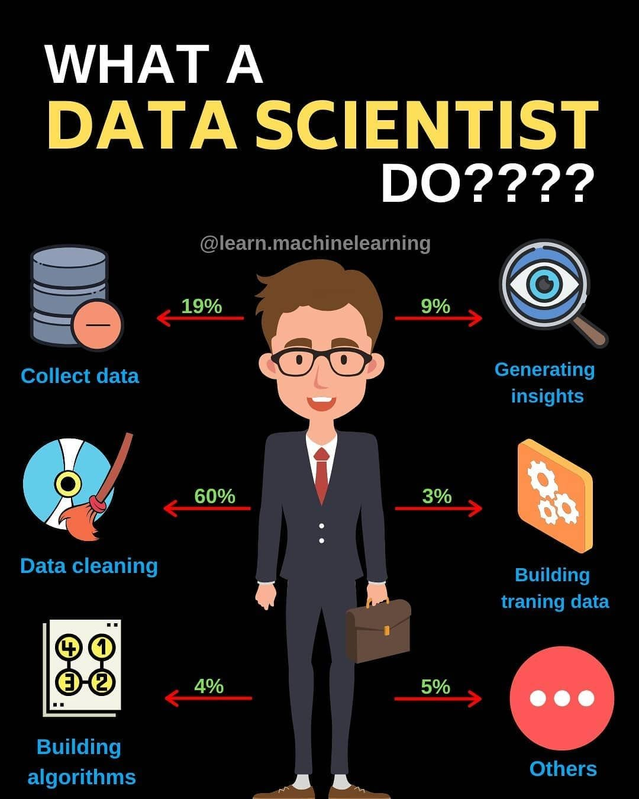

Le Data Scientist est un expert qui analyse de grandes quantités de données (aussi appelées "Big Data") pour en extraire des informations utiles. Son objectif est d'aider une entreprise à prendre de meilleures décisions, prévoir des tendances ou optimiser ses performances grâce aux données.Il travaille dans des domaines variés comme la santé, le marketing, la finance, les transports, ou encore l'industrie.
Photo: |
Video: |